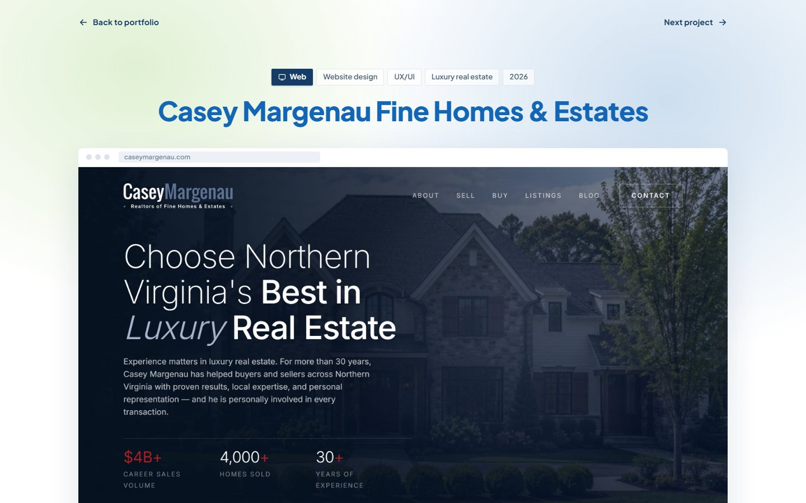

Option 01
Visual
Images only, text kept to the least that still names things: the headline and its chips, one label per block, a two-word caption under each shot.
- Hero in a frame, six sections whole
- Three phones, the photography
- "More work" cards, no case-study copy